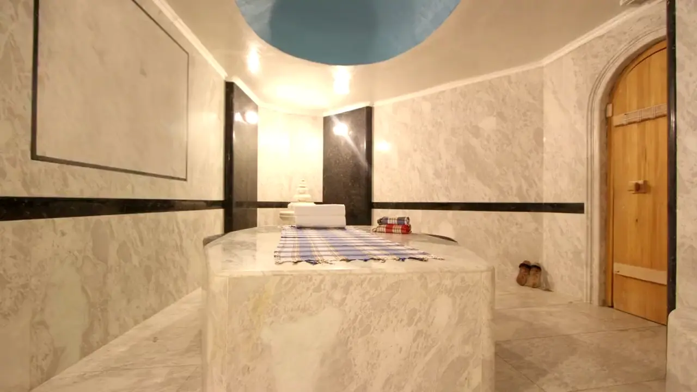
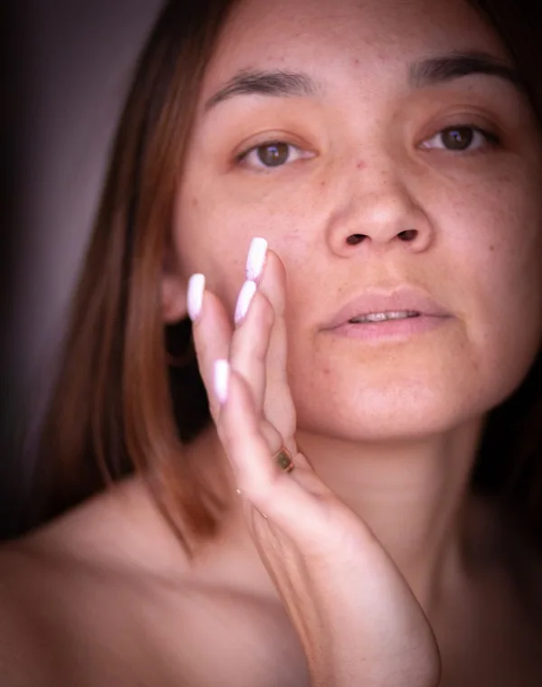

Botox, Dysport & Jeuveau
Personalized wrinkle relaxers and lip flips.

Personal care. Naturally Eden.
Botox, fillers, skin and wellness with Limor Serri, PA-C, since 2007.
A considered collection
Start with what’s on your mind.
We’ll help you find your way.

5 treatmentsSkin texture & tone3 treatmentsFacials & glow4 treatmentsWeight & wellness1 treatmentHair & scalp1 treatmentBody contouringYour features.
Your pace.
Your kind of beautiful.
Editorial stock photography; not Eden patients or treatment results.
All treatments
Personalized wrinkle relaxers and lip flips.
Lip and facial filler shaped around your features.
Biostimulators for facial and hand rejuvenation.
PRP, hair restoration and regenerative consultations.
Care for spider veins and facial capillaries.
Water-based cleansing, exfoliation and serum infusion.
Microneedling paired with HA, peptides or PRP.
Peels for acne, pigmentation and skin texture.
Resurfacing options discussed at consultation.
A carboxy gel mask available through Eden.
SkinBetter, Obagi and prescription lash care.
A medically supervised weight-loss program.
Injections to discuss with your wellness plan.
Injections selected with your provider.
Glutathione administered as a slow IV push.
Options for cellulite, mesotherapy and chin fullness.
A personal starting point
That’s what the consultation is for.
Meet your practitioner
Limor Serri, MMS, PA-C
Founder & Lead Physician Associate
Limor founded Eden Med in 2007 with a focus on natural beauty and harmonious facial balance. Her approach brings careful attention to the details that make each face unique.
A board-certified Physician Associate, she earned her Master in Medical Science with Honors at Nova Southeastern University in 2000. She also holds a degree in Sports Medicine and Kinesiology from Michigan State University.
Get to know LimorOur team
The people who help make your visit feel personal, from your first conversation.
Patient Liaison
Administrative Assistant
The difference is in the care
Good aesthetic care begins with seeing the individual: your expressions, your features, your sense of self. At Eden Med Spa, Limor shapes each plan around your goals, with natural-looking facial balance at its heart.
Meet directly with Limor to understand your options and build your treatment plan.
A focus on facial harmony and subtle refinement that respects your natural features.
Personalized care in East Boca, just beyond the Palmetto Park bridge and near the ocean.
A little clarity
Feel informed before you take the next step.
Your complimentary consultation is a chance to share your goals with Limor and explore suitable options. Bring your questions about treatments, recovery and costs so you can decide on your next step together.
Eden advises that Botox typically lasts around three to four months. Timing varies by person and treatment area; discuss a suitable follow-up plan with Limor.
Swelling, tenderness and bruising can occur after fillers. These often settle over days to weeks, depending on the product, treatment area and your response. Ask Limor about recovery time and aftercare before scheduling around an event.
HydraDerm uses water-based exfoliation, suction and serum infusion to cleanse and hydrate the skin. Eden can tailor the facial with additions selected for your skin concerns.
Eden’s medically supervised program begins with an assessment, including an examination, vital signs and measurements. Your provider discusses suitability for medication, alongside nutrition, physical activity and ongoing monitoring.
Eden’s payments page offers financing through Cherry. Available plans, approval and terms depend on eligibility. Review the current options on the payments page before applying. Explore Cherry financing ↗
The confidence to feel like you
Real experiences, shared by Eden patients.
“Her honesty is much appreciated, as she put my satisfaction ahead of any financial gain, never pushing more product or procedures I did not need.”Read full review
“She will never over inject and she wants you to age gracefully.”Read full review
“She accentuates my beauty without overdoing it.”Read full review
“She was very gentle and reassured me every step of the way.”Read full review
“She was absolutely amazing with my lip filler and has been super helpful with the semaglutide package as well!”Read full review
“Beautiful Med Spa! The Staff was extremely professional & friendly.”Read full review
“I was nervous to get fillers, so Limor made me feel comfortable and relaxed.”Read full review
“Limor takes her time to be sure she places the injections in just the right place.”Read full review
Individual experiences and results vary.
Read our reviews on GoogleA little flexibility
Explore payment plans with Cherry. Subject to eligibility and current terms.
A conversation is a lovely place to start
Meet with Limor. Share what’s on your mind.
Explore a plan that feels like you.
Find your way to Eden
Our home is in East Boca, just east of the Palmetto Park bridge.
Eden Med Spa714 E Palmetto Park RoadVisit us
For appointment availability, check our booking calendar.
Visit Eden
714 E Palmetto Park Road
Boca Raton, FL 33432
Serving Boca Raton, East Boca, Mizner Park and Delray Beach.
A glimpse of Eden
Images from Eden’s website. Visit Instagram for the latest from the practice.